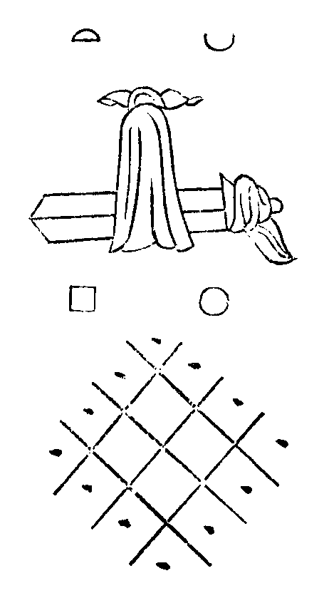

希叟和尚廣錄卷第二
慶元府應夢名山雪竇資聖禪寺語錄
師於景定五年。四月初八日。入院。
三門 千聖靈樞。妙在轉處。爍盡玄微。更進一步。(喝一喝云)莫來攔我毬門路佛殿 殿成不必拆。佛生何用打。(插香云)燒炷兜樓香。共說家私話。何故。以力假人者覇。
據室 鴆鳥毛。烏喙藥。毒無醫。休動著。輕動著。盡大地人。皮膚脫落。
省劄 震旦心宗。竺乾正眼。盡在大丞相國公筆頭點出。烜赫光明。輝天鑑地。却煩維那。分明揭示。
山門疏 大覺無心。九峰饒舌。較短量長。家私漏洩。引惹平人入禍門。金剛腦後抽生銕。
法座 丈夫膝下有黃金。爭肯與他人作禮。(驟步云)須彌燈王。脚頭脚底。
提綱 略露險崖機。千丈雪飛寒瀑。全提活人句。奩一錦簇春花。眼無筋。聽之則聾。耳無竅。覰之瞎。隱潭龍不善吞吐。穩臥碧淵深。明覺老爭解品題。虗名瀑布集。見聞俱泯。聲色純真。兔角杖力探。探之不窮。須彌筆強描。描之不就。幽遠入聖人之夢。分明示古佛之心。松風蘿月。助發玄機。谷鳥山雲。互分體用。雖然如是。猶是半提。只如開堂祝 聖。全提一句。又作麼生道。(擊拂云)四海五湖龍世界。九洲三島鶴乾坤舉本山明覺祖師。示眾云。莫有閙市出頭底麼。(良久云)不如策杖歸山去。長嘯一聲烟霧深。(拈云)明覺老人。文經武緯。韜略雙全。有八方受敵之謀。千里折衝之策。因甚歸華山馬。放桃林牛。只圖獨善其身。不能兼善天下。新乳峰。雖能褒貶。爭柰蹈入脚跡。要知麼。武陵溪路非秦境。貪看桃花入洞天。
小參。相逢不拈出。舉意便知有。早是斫額望鄉關。白雲千萬里。山僧四十年前。在此六藏眾底。語不動唇。行不動塵。佛眼覰不見。四十年後。濫尸此席。通身泥水。滿面塵埃。無著慚惶處。事不獲已。隨分將牛溲馬渤。狼毒砒霜。阿魏水銀。燈芯皂角。開箇小小雜貨鋪子去也。恐有舉意知有。當場買賣底。出來相見。不作貴不作賤。作麼生商量。(擊拂云)無星秤子輕拈出。輕若鴻毛重若山。
舉德山小參。不答話。頌云。萬戟森嚴細柳營。信威獨許漢將軍。誰知袖隱屠龍手。却把蒿枝箭策勳。
謝權管專使。東臯留兩班。洎同聚兄弟。并天童監寺。相送入院上堂。妙攝化權。使不辱命。鶴唳東臯。雲歸乳嶺。(拈丈云)主丈子黑粼皴。困臥壁根。(卓一下云)聲前喚醒。(以主丈搖曳云)舞蹈清風兩腋生。(靠主丈云)安閑又入蘿窻定。因甚如此。賓主歷然。頭正尾正。
結夏上堂。謝蹈山管茶兄弟。禁足護生。剋期取證。掘窖深埋。不由情願。乳峰自小不意秦法森嚴。仁義道中。別通一線。飯餘石鼎奏松風。山後山前。踏斷黃雲。一片兩片。三片四五六七片。也教知道。草裏有人。麥中有麵。
謝都寺幹齋。首座藏主秉拂。并謝燦首座仁庵主。上堂。南山燦燦。白石爛爛。覿當面機。瞎人天眼。(拈主丈)主丈子聞如是語。從定而起。向香積世界。乳竇峰前。(卓一下)轉法輪。(卓一下)摶香飯。聽之雙耳聾。嗅之舌頭爛。何似楊岐栗棘蓬。秦時[車*度]轢鑽。(啞)仁義盡從貧處斷。
上堂。雕梁燕語。喬木鶯吟。秋田水足。麥嶺雲深。聲色純真渾聲色。無端花擘祖師心。耳無輪眼無筋。優游千聖外。(拍膝云)閬蕩拾花針端午上堂。大地藥除眾生病去。文殊善財。不須多事。大家相聚喫盞菖蒲茶。幾枚茭粽子。向水邊林下。目視雲霄。嫌佛不肯做。雖然如是。不堪共語。乳峰與麼道。(拈主丈云)也是灸瘡瘢上。重著艾炷卓一下上堂。宿雨初晴。嵐光翠滴。瀑瀉懸崖。雲籠怪石。無位真人。面門出入。(喝一喝云)淨地上不許狼籍明覺祖師忌拈香。乳竇翠峰。何分彼此。遂府糖霜。口甜心苦。滅却雲門一字宗。斷崖飛瀑冤難訴。
上堂。雪峰輥毬。睦州擔板。展轉神通。搆得一半。那一半。良久戴嵩牛臥綠楊陰。韓幹馬嘶芳草岸。
病中入城歸上堂。醭醭紅塵。炎炎火聚。著脚無踪。翻身有路。去時山色慘愁容。歸來幽鳥啼芳樹。不涉去來。如何吐露。碧眼黃頭總不知。拈主丈問訊粼皴主丈子。(卓一下云)逢人不得錯舉祈雨上堂。杲日流金。旱苗渴雨。投壑可期。扣天無路。衲僧家為法忘軀。諸庄皆旱。我總不憂。佛性有無。須明狗子。隱潭龍王。聞如是語。身湧碧潭。拏雲攫霧。三日為霖遍九垓。大田勃爾興禾黍。飯抄雲子應無慮。雖然放筯忘恩。恒河沙數。
解制上堂。山僧一夏。與兄弟說黃道黑。謗大般若。今朝自恣。勘驗蠟人。五根完全。一根爛壞。且道還可救也無。(乃吐舌云)阿爺阿爺謝新舊兩班上堂。山無烟雲。幽景不能發越。樹無枝葉。春風豈識敷榮。乳竇乖崖飛雪。枯木糝花。向背卷舒。燦然奪目。美則美矣。要識山中景則易。要見境中人則難。如何是景中人。(以手擘開面)驢不成馬不是。
八月旦上堂。八月秋何處熱。盡大地一團銕。衲僧家向南北東西。草鞋跟踏得裂。主杖頭挑得折。驀劄相逢。德山棒臨濟喝。百怪千妖。如何計結。(拍膝云)噁。邪法難扶。(搖手云)莫說莫說上堂。秋氣肅金。秋暘鏖戰。林間秋葉。片片凋零。砌下秋虫。聲聲凄怨。滿眼聽不聞。滿耳覰不見。聽得聞覰得見。(以拂擊床云)聲前句後新羅箭中秋謝坤監寺上堂。積癈未蘇。連遭荒旱。銕作心腸。也須寸斷。山僧自小。不喜煎熬。幸遇中秋。何妨賞翫。(以拂子打圓相)皓月流輝。(畫一畫云)覺天雲散。倒跨楊岐三脚驢。深村荒草閑行看。(颺下拂子)光境俱忘。瞎乾坤眼。
九月一上堂。水牯牛偏捩[仁-二+幼]。酷暑雲林。恣情[跳-兆+孛]跳。山前祖父田園。忍見離離荒草。秋風正要及時畊。脫落鞭繩無鼻竅。去住自如。収放在我。牧笛聲聲送暮霞。故家深入千峰杳。嗚咿嗚咿。拍禪床莫教忘却來時道。
重陽上堂。并謝殿主古西堂。東籬菊染黃。秋浦茱凝翠。古佛放光明。助發實相義。淵明有眼無筋。錯認白衣人至。金風剪剪。玉露團團。故人知此意。(拍禪床)笑拍玉闌干。
為天童相訪。上堂。(拈主丈)隰州佛放光。遠射千峰頂。錦鏡冷交輝。瀑花寒鬪影。非虗非實。非色非空。舉世無人描邈得。(擲下主丈)只憑這箇為流通十月半上堂。花禁冷葉紅。草滴虗嵐翠。清淨盧舍那。全身荊棘裏。總饒伊眼裏著得須彌山。耳裏盛得四海水。裂斷千差。到休歇地。乳峰俯順人情。向耳邊低聲道。玄沙道底。
上堂。謝翠山相訪。舉拂子翳眼藥。文武火。(點一點)用得親。(撥云)煨得過。翠巖落盡眉毛眼愈明。乳竇爛却皮膚骨將槁。家醜分明說向誰。握手松根忘汝我。冷地思量。誾誾而笑。笑甚麼。曾陷迷魂八陣圖。夢中驚入夔門道。
上堂。大眾問訊。侍者燒香。曲彔棚上。說黑道黃。七世冤憎同劫會。泥犂拔舌自檐當。何故。麟鳳出時山總秀。芝蘭生處草俱芳。
十一月旦上堂。小春纔過。冬至相催。光陰駒過隙。鬚鬢雪成堆。松根石上。槁木寒灰。凍膝擁深霜樹葉。禪心清點野橋梅。喚起來打。更莫遲回。蟄龍須奮躍。何待禹門雷。
上堂。(拈主丈)乾非上。坤非下。(畫一畫)一畫先天。包含八卦。推窮爻象。凶吉不分。說盡繫辭。疑難未解。(卓一下)吉凶分。(卓一下)疑難解。(靠主丈)阿魏無真。水銀無假。
大行追嚴上堂。統御金輪四十年。拱垂衣化育黎元。萬機休罷昇遐去。四海無思不斷魂。林間衲子。感戴深恩。(以手合掌云)合掌迎歸兜率院。當來成佛補慈尊。
上堂。三度拂蒿枝。秦時[車*度]轢鑽。拶得火星飛。結得弓弦斷。用盡自己心。瞎却他人眼。千里玄樞錯踏翻。神駒十影無覊絆。業風吹上乳竇峰前。點一柸茶。向伊道。且緩緩。
上堂。勸兄弟。莫弄筆頭。簇錦攢花。光騰萬丈。鏤氷琢雪筆掃千軍。生死岸頭。一點用不著。豈不見。辛州賣柴个老盧。眼不識橫畫。米不別精麤。倩人書偈言。無物。却受它家一鉢盂。(拍膝云)衲僧門下。天地懸殊上堂。天巧剪瑤花。六出繽紛落。二祖立腰酸。楊岐嗟項縮。爭似火爐頭。柮榾高燒。紙衾包却。煖烘烘。憨睡著。不墮凝寒一色邊。(拍膝云)錯錯冬夜。堂前揭牓。
。
冬至上堂。復見天地心。舉世皆知有。山意衝寒欲放梅。岸容待臈將舒柳。(拈主丈)惟有主丈子。黑粼皴元依舊。受霜凍不枯。遇陽和不秀。壁角落頭。塊然拙守。終日談玄口不開。(卓一下)噴嚏也成獅子吼上堂。謝兩首座秉拂。都寺幹齋。并施主王判院。毛孔聞香。眉間挂劒。香積人歸。梵天血濺。美則美矣。格外一機。更須撥轉。轉即不無。眾中驀有箇耳不聽聲。舌不甞味底。又且如何擺撥。(良久云)不願萬戶侯。願識荊州面。
上堂。謝大慈和尚相訪。大慈苕菷生。倒拈風颯颯。掃盡大地塵。趙州驚吐舌。驀劄相逢玉乳峰。殷勤為掃寒巖雪。(拈主丈)主丈子。愛客情深。(卓一下)把火助熱。卓破苔錢。(畫一畫)畫斷雲。放出寒梅。南枝北枝。一花兩花三四花。疎影橫溪。暗香浮月。無端盡把春容泄。清不徹。惱碎心廣平似銕。
上堂。道至無難。惟嫌揀擇。混俗通真。騎聲蓋色。近在口皮邊。遠過河沙國。慈明揭示。借鬼畫桃符。雪竇標題。去猊懸白澤。一見便見。迅雷陶壁奮飛梭。擬議尋思。逆浪禹門遭點額。
佛成道上堂。小小星邊。深深雪裏。骨凍將枯。眼花難洗。喫盡飢寒走出山。滿面慚惶。誰使你誑言。大地一切眾生正覺成。(吽吽)棒折也未上堂。謝樵屋梨洲二西堂相訪。樵屋雲深。梨洲花褪。仙實纍纍。白茅剪剪。鶴馭初閑趂負暄。羲皇世上人希見。好風吹上玉乳峰頭。握手長歌。春和滿面。雖然世諦相見即得。佛法向上。千聖玄樞。如何撥轉。(拈主丈)沒機關。(卓一下)通一線。(擲下云)聲前句後新羅箭。
上堂。發得一機活。出得一言當。萬里無片雲。青天合喫棒。不待春風著意吹。暗香元在梅花上。
永明壽禪師忌。拈香。埜客吟殘。中巖月落。坐斷白雲。死不再活。只將宗鏡鑑惟心。法眼重重添翳膜。醫無藥光爍爍。要識永明妙旨。(插香云)更添香著上堂。謝林閣主。畫成道說法二相。(閬州人)道無可成。法無可說。黃面瞿曇。重重敗缺。家醜豈容外泄。剛被兒孫告訐。圖形畫影與人看。乳竇門風添煖熱。彷彷彿彿。一似閬州城南錦屏山。子細看來。却是鹿苑銜花。竺峰積雪。添得時人眼中屑。
上堂。(拈主丈。作彎弓勢)柳條弓蒿枝箭。(卓一下)射中虗空成兩片。狸奴白牯。雷厲風行。碧眼黃頭。星飛電卷。擬搆珠林嚙鏃機。(卓一下)險正旦上堂。咸淳更號。立見昇平。兩朝聖化。四海歡聲。乳竇家貧開宴。用度非輕。錦雲山瀑帽。珠雪瀑懸纓。步步寒花翠結。關關幽鳥琴清。排當不知因底事。(起身鞠躬云)大眾萬福。慶賀元正元宵上堂。并謝藏主副寺塔主淨頭知庫。寂寞萬峰頭。佳節成虗度。貧無一盞燈。好有多般事。洞山薑索價太穹。無縫塔入門辨主。廁籌子動地放光。利市官招財滿庫。不作佛法商量。亦非世諦流布。且道。一大藏教。還該著也無。(拂子打圓相云)我見燈明佛。本光瑞如此。
楓橋枯山訃音上堂。半夜客船鍾。漁火愁眠省。不見老寒山。淚濕吳雲冷。幽鳥啼霜月影斜。埜橋楓葉翻紅錦。喚作聲得麼。喚作色得麼。(拂子擊床云)擊碎重關。枯山未泯。
百丈忌拈香。一喝三日聾。大寂門風喪。深掘陷人坑。密布漫天網。笑一上哭一上。做盡死模活樣。乳峰子細思量。(插香云)沉本無香。何須起謗上堂。謝育王知客。延慶座主。春山青春水綠。鳥弄笙簧。梅飄香玉。具足清白梵行之相。聲色純真。豈容攢簇。聽不足觀不足。一會靈山儼未分。斷絃須是鸞膠續。雖然。爭柰育王通師公。未肯點頭在。何在。鸚鵡喚人喫煎茶。
二月旦上堂。并謝元白雲藏主。坐斷白雲。萬機寢息。黃葉止啼。總不消得。閑倚危闌看瀑花。縱乾伸眼清無極。清無極。自謂太平僧。(拍膝云)豈知堯舜力上堂。謝理兄舊住。座主隣竹外。湖頭知庫。達磨眼睛。天台骨髓。鈎鎻連環。提掇不起。提得起。湖頭春水綠成紋。竹外清風來未已。東土阿師即不問。且道。西天慧理三藏。(卓一下)還識這个麼。擬議尋思。(擲下)劒去久矣。
上堂。謝同山講師。張制屬。王判院。天高地厚。水闊山遙。古今常理。何用忉忉。衲僧家。脚跟下一段光明。十日並照。明察秋毫。不揀候門射策。何須華頂降魔。孤迥迥冷蕭蕭。(拍床云)無端翻黑月。魑魅哭連宵佛涅槃上堂。二月十五。瞿曇滅度。足示雙趺。胷摩卍字。山愁慘莫雲。花淚啼紅雨。去年一次。今年一次。明年一次。輙莫明年更明年。百千年。年年一次。狼籍涅槃心。此恨憑誰訴。(拈主丈)賴有粼皴主丈子。(卓一下)牢記取。
上堂。天地不仁。以萬物為芻狗。聖人不仁。以百姓為芻狗。(拈主丈)拄丈子不仁。以三世諸佛。歷代祖師。四聖六凡為芻狗。化育春陽煦嫗前。摧殘霜雪憑陵後。截鶴續鳧。折衡剖斗。(靠主丈)力盡神疲困壁根。(啞)笑破他人口。
三月旦上堂。春日晴春雨足。玉龍怒噴懸崖瀑。花簇簇錦簇簇。滿山桃李嫌麤俗。休揑目。直饒伊向聲色堆頭。密透重塵。坐臥經行。了無拘束。(拍床云)砒霜未是毒。
啟建壽崇節上堂。關睢頌德。樛木垂陰。八荒開壽域。萬國奉君心。亘古今為諸佛母。曇花時現覺園春。
乾會節上堂。黃河清。聖人生。體天行健。濬哲文明。率土更新堯舜化。八荒無地著歡聲。
三月半上堂。并謝道舊。錦鏡濃粧十樣花。練拖寒瀑掛蒼崖。無賓主句全機露。見得分明眼著砂。依亡妙盡。猶隔天涯。奪取黃梅無底鉢。且教盧老去擔柴。
佛鑑禪師忌拈香。父豩頑子惡毒。熱血相噴。嗔拳相[祝/土]。如風吹水自成紋。醫得耳聾成瞎禿。冷地思量。笑不成哭。乳峰將底報深冤。(良久插香)捩鼻木上堂。活馬騮。百十箇。乳竇峰前。追風跳竈。楊岐三脚驢。盡力跂步不前。江西千里駒。奮鬣追踪不到。更饒伊象頭檀特。九十六種。見鞭影而行。蹶蹄不少。未奏沙場汗血功。便思嚼嚙天閑草。好則甚好。明覺老人。笑須絕倒。
三月廿五上堂。綠暗紅稀。人家翠微。杜鵑啼月。紫燕銜泥。莫春者。浴乎沂。風乎舞雩。詠而歸。本是儒家閑戲劇。剛言漏泄祖師機。是不是非不非。老倒乳峰那得知。(拈主丈)松根憨睡足。閑把瘦藤戲。(策杖下座)侍者無事相隨。
四月初一上堂。謝耆舊[栽-木+土]松。萬本青松。後人標榜。臨濟兒孫。當機不讓。千古清凉樹蔭人。法門梁棟真堪賞。初莫學黃梅道者。貪傳破鉢盂。連累周家女。無地著渾身空惆悵。(拍床云)藂林難免無根謗滿散壽崇節上堂。仙苑蟠桃不老春。三千年實薦芳新。錫開王母瑤池宴。滿簇金盤壽聖人。雖云絕品。未足為珍。(拂子打圓相云)幸有菩提真妙果。年年同献佛生辰。
佛生日上堂。無憂樹下風如箭。九龍吐出水含毒。涓滴沾身痛入心。霎時吹面刀剜肉。不知悉達為何因。纔出母胎罹此酷。後代兒孫忍見渠。一年一度香湯浴。浴即不無。且道。佛身無為。不墮諸數。向甚處下手。(以手作澆湯勢。唱云)我今灌沐諸如來。淨智莊嚴功德聚。(拍禪床云)只恐不是玉滿散乾會節上堂。聞道金輪出母胎。盡河沙界掃氛埃。想應新整乾坤手。多帶堯風舜日來。普天率土。壽域宏開。(拈主丈)林下野人何祝献。(卓云)一莖草上玉樓臺。
結夏上堂。百二十日夏。今朝始發頭。飯杪雲子白。羮煑菜香浮。未問寒山子。先看水牯牛。山前千頃地。信脚踏飜休。
上堂。謝楊居士。一口吸西江。赤土塗牛嬭。蕩盡聖凡情。(卓一下)猶欠這一解。丹霞馬祖。眼見如盲。靈照龐婆。口說如啞。驀劄相逢露一機。驚翻巖瀑蒼龍掛。雖然斫額望鄉關。前頭大有路在。
煎笋上堂。玉版阿師。錦綳稚子。頴脫藂林。頭角呈露。參透油煎石磉盤。飽經鰲煉翻身去。塞斷咽喉。更須吞吐。(擊床云)毗耶未識香來處端午上堂。籜包角黍。茶點菖蒲。香浮毛孔。清透肌膚。肱枕梨床心醉月。驅邪何用掛神符。(啞)汨羅人去遠。還有獨醒無。
上堂。雲収麥壟。水足秋田。繭繰白雪。鶯弄朱絃。無象太平還有象。蕢桴土皷樂堯年。誰知聲色裏。心印是渠傳。
上堂。謝郡主汪令人。同宅眷。入山施財。蓋佛殿建眾寮。大哉力量人。生極富貴家。不被富貴惑。廣修一切善。智惠心為父。慈悲性為母。忠孝為兄弟。貞良為姊妹。正信為師友。和柔為眷屬。降神釋梵宮。秀氣鍾玉葉。非女示汝身。助揚佛正化。香湯沐金軀。莊嚴功德聚。法華誓流通。俾令出火宅。賜與制[來*ㄆ]綾。三車無少異。凡可著力處。悉皆善用心。竭來玉乳峰。萬選青銅施。茂我旃檀林。覆我覺王殿。永除諸滲漏。不嗅其餘香。佛天展歡顏。湖海蒙光賁。舉手加額贊。連聲道難消。祝之以世壽。盤石固難比。祝之以世福。滄海淺非肩。世世願為諸佛母。四生九有盡承恩。
上堂。(拈主丈)捉象者全其力。捉兔亦全其力。用力既均。厥功可奏。山僧四十餘年。周行大澤。密透棘林。架弩張弓。只能自射。今朝踞萬峰頂。靈禽異獸。雜陳乎前。試放一箭看。(擲下主丈)看看。(良久拍膝云)比擬張麟。兔亦不遇。
挂帳上堂。活衲僧生銕鑄。吐出銕心肝。掛起銕面具。蚊子上銕牛。無你啗啄處。素紈搖月。碧帳含烟。或放或収皆在我。長伸兩脚放憨眠。灼然如是。天地相懸。開眼不知天大曉。閻家催索水漿錢(拍床一下)閏月一日上堂。能與諸魔外道戰鬪惟靜。能令四大地眾生歸仰惟退。能通三大藏人天講說惟默。能與三世諸佛。歷代祖師。把手共行。惟正。過此四重關。別有一條通天活路。是汝諸人。因甚望崖却步。(拈主丈)忍俊不禁。(卓一下)八字打開。令箇箇到大休歇之地。雖然如是。(靠主丈)誰知雲外千峰秀。更有靈踪在上方。
上堂。(因暴風率雨)舉興化和尚云。昨日赴箇村齋。遇暴風卒雨。向古廟裏軃得過。(拈云)興化老兒。人貧智短。馬瘦毛長。恁麼說話。敢稱臨濟兒孫。乳峰遇暴風卒雨。亦不能軃避得。整襟危坐。瘦策閑嬉。靜倚危闌看雪瀑。懸空千丈玉龍飛。(拍床一下云)不知誰薦截流機。
大慈環峰和尚訃音上堂。一湖橫陳。七峰環遶。妙轉玄樞。死生關破。去何有偈。流水渡百灘。來本無言。疾風號萬竅。更問如何與若何。珍重便行。髑髏前失照。斷猨哭月千林曉(辭世頌。來本無言。去何有偈。更問如何。珍重珍重)七月初一。祈晴上堂。薄福住山。百無所取。何以表勤。惟誠為主。祈晴便得晴。祈雨便得雨。忽有箇漢。出來道。長老如虫禦木。偶爾成文。又何必趙婆酤醋。只向他道。蒿枝箭解射紅心。發機豈藉千鈞弩。
因事上堂。乳竇相從幾弟兄。忘形骸外又忘情。炊香好甑和蘿飯。鼠糞無端污却羮。隣僧扣齒。訴不平聲。折筯何妨挑剔去。壁根不到礙人行。
開山通禪師忌拈香。虗空包不包。大地壞不壞。行脚不遇人。出語無賴聊。謾言密室不通風。濕紙如何褁大虫。
上堂。謝慧知客。(巴州人)巴南巴西。水流巴字。古篆分明。心畫顯著。游泳江湖四十年。與世同波無彼此。朅來千丈岩前路。截流機透險崖句。辨龍蛇眼明今古。雖然。何侶老趙州[彳*京]彴橋頭。滴水丈波喫茶去。
上堂。社燕催歸。賓鴻欲返。雪點白蘋洲。錦鋪紅蓼岸。蝦蟆入汝鼻孔裏。毒蛇穿你眼睛中。即不問。且道。占波國與新羅國鬪額。是第幾機。(喝云)切忌妄通消息。
中秋上堂。靈山話月。曹溪指月。玉乳峰前。相呼看月。縱饒光透十虗。未免成第二月。諸人要見真月麼。(以拂。打圓相云)非暗非明。非圓非缺。無物堪比倫。教我如何說。
上堂。并謝劉省元。瑞巖仙巖和尚。并諸道舊。目前機。真實相。張都料。輪材底輪材。李作頭。[祝/土]磉底[祝/土]磉。動靜奚分兩處看。太平基業初無象。逈出常情。與誰共賞。佳客歡呼自往來。瑞巖拍掌仙巖唱。潦倒龐公。精神迭宕。
上堂。從上若佛若祖。峻機雄辯。狹路通衢。列派分宗。圖王覇業。殊不知。三傳作春秋廢。九師興而易道亡。乳峰這裏。憨憨癡癡。百醜千拙。飢來喫飯。困來打眠。不知寒暑之往來。不知生死之交謝。但見皇風成一片。不知何處是封疆。
上堂。共住孤峰頂。霜牙咬菜根。一身塵不染。千古道長存。石竹閑眠鹿。巖松冷掛猨。(拍床一下)我行荒草裏。汝又入荒村。
上堂。謝監収。一二千碩糓。四五百籮粟。[禾*罷]稏熟天風。高低布雲麓。辛勤収拾歸來。碓擣明璣。鉢盛香玉。無位真人手捫腹。口唱無生曲。花簇簇。聽不足。(拂子擊床云)欵乃一聲山水綠開爐上堂。(拈拂子)死柴頭無烟火。(吹一吹)信口一吹。面門爍破。可怜龍門遠知客禮首座。火爐頭熱血相噴。分爭你我叨叨。林鳥啼評跋了。(良久云)笑倒嵩山破竈墮。
上堂。乳竇家私。寸無可取。分明徹骨貧。剛道薰天富。綱宗委地。力要匡扶。大廈傾頹。直須撑拄。不學老楊岐。破屋雪真珠。縮項暗嗟吁。不學大愚芝。脫粟淡黃[泳-永+(虀-卄)]。不喫從君去。千聖頭邊露一機。(拂子擊床云)靈蹤不在猨啼處。
上堂。(謝兄弟傳瓦。蓋印心堂)合水和泥。打成一片。脫却胚腪。重加煅煉。滲漏全無蓋覆人。平地昇高乘快便。若非眾手出力扶持。心印蒙塵。光難發現。美則美矣。只如古人道。明堂瓦插簷。又且如何擬議。(良久云)切忌鑽龜打瓦。
上堂。趂晴蓋却屋。捉空種了麥。安身立命既無憂。只須體究庭前柏。堅守歲寒。青無變色。喚作西來直指宗。瞎。
出城歸上堂。月下扣朱門。不會推敲句。滿面是埃塵。低頭陪笑語。不重己靈。諸聖不慕。拍盲入草尋人去。歸來羞對白雲。倦倚寒巖枯樹。(拈主丈)笑倒粼皴主杖子。主杖子笑甚麼。(卓一下)逢人但恁麼舉理宗皇帝小祥陞座。鳳輦昇遐恰一周。思君心切淚交流。攀龍無路空摧哽。凝望蒼梧幾許愁。莫有知恩報恩底麼。出來吐露(問答不錄)提綱。萬機休罷。龍睡碧潭。百念凝寒。鳳栖金闕。是以千聖受手。瞥轉玄樞。虗徹融通。靈明炳煥。惟精惟一。允執厥中。妙入化機。深窮聖域。不可以言語造。不可寂默通。近在眼皮邊。遠過河沙國。釋迦老子。棄金輪位。逾城出家。正覺山前。發明此事。度生已畢。拘尸羅城。金棺七繞。放大寂光。九有四生。咸躋妙覺。應真不借。隨類分身。象駕崢嶸。降生巨宋。為我。
理宗烈文仁武安孝皇帝。四十餘年。行堯舜道。八荒開壽域。萬國奉君心。子育黎元。砥平天下。功回位轉。妙盡依亡。生死情空。聖凡路斷。正恁麼時。且道。
舉僧問齊安國師。如何是本身盧舍那。國師云。與我過淨瓶來。僧過淨瓶。國師云。却安舊處著。僧安舊處。再問。國師云。古佛過去久矣。(拈云)這僧掣開金殿鎻。國師撞動玉樓鍾。雖然覿面全提。要且當機蹉過。諸人要見本身盧舍那麼。(提起拂子云)切忌捏目。敬呈一頌。統御金輪四十春。篤行舜德與堯仁。莫言過去無踪踪。盧舍時時現本身。
楓橋中庵和尚訃音上堂。吳江風急浪翻空。聲擊楓林半夜鐘。驚起客船塵夢破。踏翻大地去無踪。寒山撫掌。龐老槌胷。少室門庭空寂寂。凝寒古路綠苔封。
至節上堂。史筆書雲。綉閨添線。愛日舒長。豐年取驗。衲僧不被四時遷。妙應圓機轆轆轉。(喝一喝)喝散嶺上白雲。(畫一畫)掣斷脚跟紅線。陰極陽生總不知。曝背晴簷。手摘寒梅。一點兩點三四點。拈花微笑今重見。
上堂。如來禪。祖師意。落葉錦翻空。亂山雲積翠。見得分明隔萬層。道得完全失千里。非不非是不是。達磨大師。無當門齒。
上堂。銕團欒。無縫罅。上下三指。彼此七馬。德山臨濟。眼見如盲。雲門趙州。口說如啞。(拈主丈)主丈子。忍俊不禁。(卓一下)等閑捉敗。休休。盡法恐無民。且放天寒赦。
上堂。庾嶺春歸。溪梅早知。雪破寒英。一點半點。月橫疎影。三枝兩枝。未放高樓吹笛。且聽茆舍吟詩。十分瀟洒。一段清奇。將謂黃梅消息絕。(拍床云)暗香猶有好風吹。
上堂。謝天童月靈江。靈江月中巖月。交影松蘿。斷猿啼切。聲色純真見一邊。騎聲盖色天然別。別別。明覺掀眉。長庚吐舌。
智覺祖師忌拈香。迅瀑千尋。懸崖萬仞。說法聲高。驗人機峻。要扶法眼門風。花衲元非古錦。堪笑高麗四九僧。面門搭了冬瓜印。(插香云)乳竇謗沉無香。(吽吽)是可忍。孰不可忍。
雪上堂。圖畫天開。春風剪裁。爛銀庭院。白玉樓臺。將謂乳峰貧徹骨。敵君王富自何來(拍禪床一下)丙寅正旦上堂。松頂雪簪花。山頭雲褁帽。呼喚賀元正。粲發溪聲笑。一不成單。二無兩箇。漏洩元元化母機。春風未必能包褁。
上堂。陌上語聲喧。賀歲人來去。鞦韆擘曉煙。綠蓋翻春霧。佛法無多。兩手分付。更問如何與若何。咸淳丙寅正月五。
上堂。昨夜蝍蟟吞跛鱉。天明屙出一團銕。平地翻身觸險崖。擘破崑崙成八橛。捻土為香供養伊。細問因由不肯說。不肯說。太饒舌。莫管他人屋上霜。自家掃取門前雪。
元宵上堂。道教灰飛。佛燈花燦。大地歡悰。笙歌賞玩。(拈主丈)主丈子。按下雲頭。得失是非。渾然不管。一點光明耀十虗。古今閱幾平人眼。因甚如此。(靠主丈)司空見慣。
百丈祖師忌拈香。未有清規。人能弘道。纔涉典章。翻成機巧。華屋春風錦綉圍。草廬不見人高臥。(插香)啞。刻糞為香。是誰之過。
上堂。謝龍首座相訪。天童來。飄蓬四十餘年。夢遶晶然山路。才見廣安軍人。便憶破庵師祖。摵破碎沙盆。打動蝦蟇皷。驚落蛟龍虎兕威。知音不在頻頻舉。
病起上堂。謝殿主藏主。都寺副寺。修造知庫侍者。光明幢。如來藏。八面玲瓏。十方通暢。拭佛祖大病之瘡疣。見鬼神幽愁之情狀。擡你爺擡你娘。擡上方丈。(拍禪床云)洞山寧免無根謗。雖然。我王庫內。無如是刀。何似楊岐破屋。盡底掀翻。鼎新改創。金鷄飛上玉欄干。乃作鷄聲云。[口*注][口*注][口*注]。低聲低聲。莫說會禪。連侍者惡模樣。
佛涅槃上堂。瞿曇醜惡。臨死猶多。足下輪輻顯露。胸前卍字揩磨。抱橋澡洗。寄帽投河。舉世無人援手得。竟隨殘夢入無何。
上堂。庭院春深。和風翠陰。桃花簇錦。柳線搖金。無眼靈雲徒說悟。一生埋沒祖師心。
上堂。威音前。咸淳後。(拈主丈)一箇黑粼皴。(卓一下)機發牢關透。全身游戲生死園林。信脚踏翻聖凡窠臼。笑釋迦客夢未醒。耻彌勒藩籬未剖。(左卓一下云)客夢醒。(右卓一下云)藩籬剖。(擲主丈)貶入無何有乾會節上堂。焚香書寫佛名經。窗外幽禽報喜聲。次補數中添一位。太唐國裏聖人生。
因事上堂鑿透耳聾。板夾背傴。只要醫行。不管人苦。(拈主丈)主丈子。不別時宜。(卓一下)強行直路。大地羊腸遶棘林。(喝一聲)何處去三月半上堂。萬物一體。天地同根。(喝一喝)清平世界。切忌訛言。(拈主丈)主丈子。不是萬物。喚什麼作一體。天不能盖。地不能載。與什麼同根。優游千聖外。妙密洞無痕。(靠丈云)三月懶行花下路。一家閒閉雨中門。
無準和尚忌拈香。玉几山前。凌霄峰下。熱喝嗔拳。做人話杷。犀牛扇颺向他方。捋虎鬚攔胷便行。一炷兜樓怨結成。(插香云)貴買賤賣上堂。浴乎沂舞雩歸。天真自性。不涉離微。語底默底不是。非語非默更非。明眼衲僧會不得。(拍膝云)落花深院靜。愁聽子規啼。
上堂。謝量田種樹。落賴門風。大家撑拄。量田底量田。種樹底種樹。帶雨扶犂綠野畊。和雲荷钁千峰去。有甚心情。管得南泉猫兒。趙州狗子。勘證平田婆。連累周家女。棘林中有通天路。飽飯狂歌。閒行幾步。脚頭山色無重數。
上堂。謝摘茶看筍。寂子撼茶。人貧智短。老婆偷笋。馬瘦毛長。乳峰瞥轉一機。不露槍旗。睡魔退舍。深藏頭角。玉版書勳。舌頭無骨人。始解知真味。雖然如是。原溈山夢。贈趙州掌。是體是用。(舉起手)者篾籃子。是十五錢買得。
上堂。桑疇雨過羅紈膩。麥壟風來餅餌香。揭示西來端的意。好商量處錯商量。鶯啼綠樹。燕語雕梁。費盡分疎人不會。急隨蝴蝶過蕭墻。
浴佛上堂。金輪王宅。惡業無多。不知何事。生此妖魔。打與狗噇頑不殺。好將惡水劈頭澆。
壽崇節上堂。布關睢化襲宮闈。萬國人趍奉母儀。壽結蟠桃千載實。年年天仗宴瑤池。
乾會節上堂。九曲黃河徹底清。六龍乾會聖人生。周行七步稱尊處。山嶽齊呼萬歲聲。
上堂。謝首座秉拂。都寺幹齋。遂府糖霜。黃蓮未是苦。天台風樂。烏喙不多爭。覰之眼睛枯。嗅之腦門裂。無端更加栗棘蓬。吞不得吐不得。百味完全。如何咀嚼。乳峰有箇肘後靈方。普使諸人飫甞妙味。(舉拂子)看看。(打圓相。中間著品字三點。畫一畫云)會神。麼農元不識。喚作梵天書。
上堂。共住不知名。千聖亦不識。無端平地生荊棘。兄呼弟應。與世同波。笑獨醒人死汨羅。恁麼也好。不恁麼也好。(拍床云)手拍闌干唱竹枝。哩哩囉天涯望遠無人到。
上堂。舉溈山臥次。(長蛇偃月勢難分)仰山上問訊。(赤脚上刀梯)溈山轉面向後。(綿裹蒺藜)仰云。某甲是和尚弟子。何用形迹。(撩鉤搭索)溈山作起勢。(利動君子)仰便出。(黃蘗作驢鞦)溈喚回云。我適來得一夢。你試為我原看。(滿口嚼冰霜)仰將一盆水。一手巾度與。(毒蛇須是乞兒捉)溈便洗面。(刺腦入膠盆)香嚴至。(更添一箇牙郎當)溈云。我適來與寂子。做一上神通。不同小小。(滿川龍虎轝。猶自說平基)嚴云。我在下面。一一知得分明。(不獨瞞人亦自瞞)溈云。試道看。(捉賊須見贓)香嚴點一盃與之。(幽州猶自可。最苦是新羅)溈云。二子神通。過於鶖子。(誣人之罪。以罪加之)拈云。細影密鋪金瑣碎。清聲微動玉玲瓏。則不無溈仰父子。點撿將來。總是開眼做夢。雖然。洛陽花下路。迷却幾多人。聊呈一頌。撮藥場中驗作家。一枝手髂兩條蛇。劉寄奴草雖靈驗。已是遭它毒口來。
上堂。舉藥山久不上堂。(古墓深深埋暗箭)院主白云。大眾久思示誨。(休將游艇子。撩撥洞庭湖)藥山云。打鍾著。(皁旗閃閃陣雲橫)院主打鍾。(火牛鞭起奪齊城)眾才集。藥山便歸方丈。(倒携無柄箒。六合掃胡塵)主云。既許示誨。因甚一言不措。(甲不開倉)山云。經有經師。論有論師。爭怪得老僧。(百花帽子布纏腰)拈云。眾中盡道。藥山閉門屋裏坐。禍從天上來。殊不知。院主雖得一場榮。刖却一雙足。聊呈一頌。九曲明珠久蘊藏。走盤時見發寒光。當陽拈出還収拾。瞎眼波斯自著忙。
上堂。旱地奔雷。青天撒雨。六戶不扄。龍無龍句。田地穩密底。死汗迸流。妙用縱橫底。寒毛卓竪。萬別千差透密機。(拈主丈)撼動憨眠主丈子。主丈子喏。老老大大。百念灰寒。因甚被人唆使。只向他道。四皓出商山。漢業歸明主。功成依舊深藏去(靠主丈)上堂。鑑在機先。妙在轉處。碧眼胡兒。全無肯路。行一步是一步。信脚錯踏翻。大地無寸土。業風吹上乳竇山。來點一盃茶。徐徐向伊道。提鞋去。
中夏上堂。蒿籬關猛虎。筆管養蒼龍。穩帖帖藏牙伏爪。黑漫漫怪雨顛風。臨濟小[病-丙+斯]兒。驚心欲折。豐干老凍膿。睡思方濃。山濛濛水溶溶。乾坤無碧落。収放絕行踪。
上堂。幕掛春烟。簟鋪秋水。高枕橫眠。鼻雷聒耳。爍石流金總不知。何須殿閣薰風至。又誰管九十日。種粟燒畬。說甚麼十三番。悟明自己。灼然是箇無煩惱。閻家倒退三千里。其或未然。(拍床云)莫道甕中常有米。
明覺祖師忌拈香。洞庭七十二峰。飛雪一千餘丈。晨昏說法琅琅。誰謂盧公已往。元不往。(插香云)在者裏。優曇火裏開。嗅著無香氣。
上堂。三伏炎蒸。汗流如雨。一莖草上建瓊樓。徹骨貧窮敵國富。乳峰者裏。乾嚗曝地。滴水也無。有甚汗臭氣。雖然。菩薩龍王行雨潤。遮身直上九重雲。
上堂。三界炎炎如火聚。攪擾勞生困蒸煑。邪見稠林蔽祖庭。孰為臨濟陰凉樹。(拈主丈)主丈子。回避無門。全身荷負。(東邊卓一下)特立獨行。(西邊卓一下)危分險布。(畫一畫)掃除枝葉不留踪。普覆大地人。徹骨清凉去。雖然如是。趙婆酤醋(靠主丈)謝監収。并祈雨上堂。一雨潤枯焦。大地承恩澤。黃鋪畎畆雲。青鎻郊原色。刈禾鎌子疾如風。收放全歸掌握中。且道。金鷄一粒粟。又且如何拈掇。切不得道。供養十方羅漢僧。何故。噎殺人。
開山通禪師忌拈香。未見岑大虫。狐膽先驚破。密室不通風。家私狼籍了。更說新開乳竇山。(插香云)無端刻糞作旃檀。
解夏上堂。正因二字得聞。鼠糞汙一釜羮。乳峰初無箇事。飽噇飯了閑行。松門雨霽。苔逕雲橫。隄防平地上。著脚是深阬。
上堂。謝新舊知事頭首。并元東山。玉乳巖花。一花五葉。新舊聯芳。色香奇絕。蹙紅皺碧奪天機。琢雪鏤氷布林樾。簇簇羣英。臨風選折。剛被東山野老知。瘦策幽尋。衝開碧嶂雲。踏破青蘿月。
因事上堂。寺踞千峰。十方同聚。家賊難防。令人驚怖。正法明王。怒髮衝冠。作如是言。休驚怖。(拈主丈)儂家自有降魔杵。(卓一下)粉碎髑髏。(畫一畫)裂開腸肚。熱銕洋銅滿滿盛。鼻繩牽入泥犂去。佛子將謂出家行菩提路。誰知反不如狼虎。累及七代先靈。生身父母。號天血洎啼紅雨。(拍床云)啞。怨恨憑誰訴上堂。有一物。全機用。塵勞之儔。如來之種。輕若鴻毛輕。重若丘山重。(拈主丈)乳峰信手拈來。(卓一下)點破勞生塵夢。剛被秋虫落葉知。清聲戞玉寒。翠色黃金弄。雖然不直分文。(擲下主丈)擲地金聲。令人驚悚八月旦上堂。一宿覺。三擔土。脚未跨門。丰骨已露。等閑舉一步。危徑結寒花。信采示一機。斷崖飛瀑布。雖然。要跨乳峰門即易。要入乳峰室即難。何故。鴻飛冥冥。戈人何慕。
上堂。舉馬祖百丈。南泉西堂。翫月次。祖云。正恁麼時如何。(藕絲絲牽。動五須彌)堂云。正好供養。(過山尋蟻跡)丈云。正好修行。(渡水覔魚跡)泉拂袖便行。(蝦跳不出斗)祖云。經入藏。禪歸海。惟有普願。獨超物外。(渾家送上渡頭舟)拈云。馬師父子。一等弄光影。就中南泉較險。何故。拂迹成痕。復成一頌。百戲場中賽錦標。蜜脾古馬舞兒多。頭籌暗被奪將去。行主喃喃強說呵。
上堂。謝後堂□寮元監寺。并踏山。地上翻瓢。眉間掛劒。古道雖微。惡聲難掩。窮則通通則變。倒跨楊岐三脚驢。踏破山前祖父田園。一片兩片。四五六七片。
丙寅九月初一。退雪竇。千丈懸崖弄險巇。草鞋修整已多時。秋風償盡皮毛債。散步閑雲快活戲。
希叟和尚廣錄卷第二